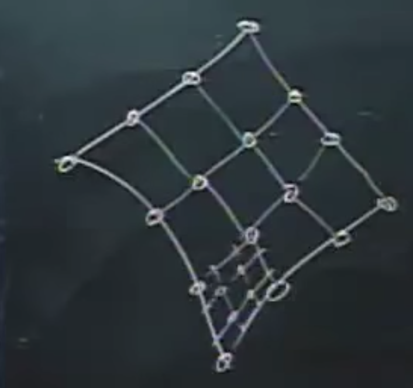

UC Davis Computer Graphics
Ref
Affine Transformation


Curves in plane
- subdivision curve, Chaikin's Algorithm
- control point
1/4 3/4 again and again
go througn mid-point

- 反过来
 pick some points
tan line
pick some points
tan line
- 反过来
- 3d  does not work
- control point
1/4 3/4 again and again
go througn mid-point
- Bezier Curve
attract point


- B-spline curve continuous->derivative equal bezier vs spline 使用n = 3的贝塞尔曲线原因是要限定相邻的两个分段多项式，在交接点位置的一阶导数相等（斜率相等）和二阶导数相等（斜率的变化率相等）
move objects in space
- a point in space

- translation

- scaling
 center is not in origin, then scaling will cause translation
center is not in origin, then scaling will cause translation
- rotate


- 3d rotate around z axis
Rotations around an arbitrary axis
- model-view-controller easy to debug
- Rotate around rotate 一个点 一个向量(arbitrary axis）rotate some angles 怎么旋转：把这个点平移到原点，向量旋转到和eg. z axis重合，rotate some angles，再反着做回来 translation 投影 rotate -theta, rotate fi reverse
- 4d
 projective point
projective point

 parabola 抛物线 project down as a circle
rational splines 有理样条
parabola 抛物线 project down as a circle
rational splines 有理样条 - simulate a camera

the camera transform
viewing transform


Clipping
- find the real interesting spaces - "in"
 ps. polygon convex, 连接任意两条边的线段都在区域内
ps. polygon convex, 连接任意两条边的线段都在区域内non-convex -> split into convex pieces - glu lookat vs glu perspective
- glulookat
定义了观察者的做坐标，视野中心点在世界坐标系的位置 & 相机的朝向void gluLookAt ( GLdouble eyex, GLdouble eyey, GLdouble eyez, GLdouble centerx, GLdouble centery, GLdouble centerz, GLdouble upx, GLdouble upy, GLdouble upz);- glu perspective
定义了相机的内在参数，可视角大小， 物体显示在canvas上的x和y方向上的比例，第三个参数zNear,定义距离相机（人眼）最近处物体截面相距的距离。这个值越大，表示观测点距离物体距离越远，看起来物体就比较小，反之则比较大。如果物体运动到距离观测点的距离小于了设定的zNear,则物体不会被绘制在画板上。 第四个参数zFar,定义可观测到的物体的最远处截面相距相机的距离。如果物体运动到距离观测点的距离大于了设定的zFar,则物体不会被绘制的画板上。void gluPerspective ( GLdouble fovy, GLdouble aspect, GLdouble zNear, GLdouble zFar);
- glu perspective
- glulookat
- do clipping in image space

Depth Buffers and Ray Tracing
？something is in front of another image space judge by z coordinates
- depth buffer 存储最近的物体的深度 如果object的深度大于z buffer的值，不绘制
- Ray Tracing

- painter's algorithm 画家算法首先将场景中的多边形根据深度进行排序，然后按照顺序进行描绘
Color and Shading
- color

- lights

Quaternions
rotations
structure data on disk?
extension of complex


 不满足交换律
不满足交换律
- Unit quaternions
 rotate around vector v, rotate theta angle
ps.
欧拉旋转:
Gimbal Lock问题的核心还是在于我们采用了固定的旋转顺序
四元数:
chrome-extension://cdonnmffkdaoajfknoeeecmchibpmkmg/assets/pdf/web/viewer.html?file=https%3A%2F%2Fkrasjet.github.io%2Fquaternion%2Fquaternion.pdf
rotate around vector v, rotate theta angle
ps.
欧拉旋转:
Gimbal Lock问题的核心还是在于我们采用了固定的旋转顺序
四元数:
chrome-extension://cdonnmffkdaoajfknoeeecmchibpmkmg/assets/pdf/web/viewer.html?file=https%3A%2F%2Fkrasjet.github.io%2Fquaternion%2Fquaternion.pdf
Shading and Texturing
- shading 着色
 b means base color -> texturing
10 hyper parameters
direct light / spot light -> l change or not
n bump mapping
ploygons
b means base color -> texturing
10 hyper parameters
direct light / spot light -> l change or not
n bump mapping
ploygons- flat shading (平面着色) one color
- Gouraud Shading -> average color

- Gouraud Shading -> average color
- phong shading -> average normal
- flat shading (平面着色) one color
- texturing 纹理
texture mapping -> interpolate

The hierarchical modeling system
how to model things
 model one thing -> transform to another
polygon -> commands
not only drawing things -> but also building things
model one thing -> transform to another
polygon -> commands
not only drawing things -> but also building things
Scan Conversion

- device space
 split polygon into trapezoids
edge track endpoint
split polygon into trapezoids
edge track endpoint
 other staff:
light sources <- inverse of viewing space
texture coordinates
R/G/B inks
other staff:
light sources <- inverse of viewing space
texture coordinates
R/G/B inks - Warnock's algorithm
Curves and surfaces
- Chaikin's Algorithm
 Chaikin's Curve -> control points 1/4 3/4 (fix ratio), initial point may not on the curve
3d surface -> two pairs of control points -> subdivision algorithms
Chaikin's Curve -> control points 1/4 3/4 (fix ratio), initial point may not on the curve
3d surface -> two pairs of control points -> subdivision algorithms - Bezier Patch
- Bezier curve 1/2 initial point is on the curve
- control points coplanar
- convex hull property 凸包， curve is not getting away from u
- variation diminishing 变差缩减性，不会来回摆动
- slope at p0 is equal to p0p1, first derivative

- how about second derivative

- Bezier curve 1/2 initial point is on the curve
- NURBS non uniform rational Bspline
- NUBS
 limit degree of curves
limit degree of curves
- NUBS
- Bezier surface
four corners on the surface
Bezier curves as boundary

Visible surface algorithm

- Painter's algorithm
paint all from back to front <- sort polygons
- Binary Tree Sort

- BSP - trees
 moving camera position, just move subtree left to right
moving camera position, just move subtree left to right
- BSP - trees
- Binary Tree Sort
- Warnock's algorithm
Ray Tracing
- how it do
eye position -> pixel trace to the nearest point

- first paper
reflect shadow refract - forward & backward ray tracing backward ray tracing may miss things
- calculate the nearest point

Subdivision Surface
- Chaikin's Curve
- Chaikin's Surface/Doo-Sabin Surface
不同方向上做1/4 3/4（Chaikin's points），连接，划分成一个个小的mesh

- how to save such data ? -> split edge a pointer -> start point a pointer -> next edge a pointer -> neighbor subEdge
- Catmull-Clark Subdivision
loop subdivision (triangle meshes)
 vertex point (half way half way)& edge point (mid point)
Face point: F = average of all points defining the face
Edge point: E = average of tow adjoining face points and the two vertices
Vertex point: V = (average of all face points + average of all edge poins + constant origin vectors )/ 4
vertex point (half way half way)& edge point (mid point)
Face point: F = average of all points defining the face
Edge point: E = average of tow adjoining face points and the two vertices
Vertex point: V = (average of all face points + average of all edge poins + constant origin vectors )/ 4

- how to model sphere -> triangle

 data structure: 3 vertexes + 3 pointers to neighbors
data structure: 3 vertexes + 3 pointers to neighbors
Shadows part
- ground plane (need a point and a normal)
 avoid sharp shadows -> texture with fuzzy edge
polygons too complex -> general bounding box
avoid sharp shadows -> texture with fuzzy edge
polygons too complex -> general bounding box - shadow volumes
count numbers of into a shadow volumes (+1) and out of a shadow volumes (-1)
sum = zero : no shadows
ps.
umbra penumbra

- depth buffer shadows


Camera motion
- simulate camera motion path as smooth curve


{kind=link}
{kind=link}
{kind=link}
{kind=link}
{kind=link}
{kind=link}
{kind=link}
{kind=link}
{kind=link}
{kind=link}
{kind=link}
{kind=link}
{kind=link}
{kind=link}
{kind=link}
{kind=link}
{kind=link}
{kind=link}
{kind=link}
{kind=link}
{kind=link}
{kind=link}
{kind=link}
{kind=link}
{kind=link}
{kind=link}
{kind=link}
{kind=link}
{kind=link}
{kind=link}
{kind=link}
{kind=link}
{kind=link}
{kind=link}
{kind=link}
{kind=link}
{kind=link}
{kind=link}
{kind=link}
{kind=link}
{kind=link}
{kind=link}
{kind=link}
{kind=link}
{kind=link}
Branches of CG